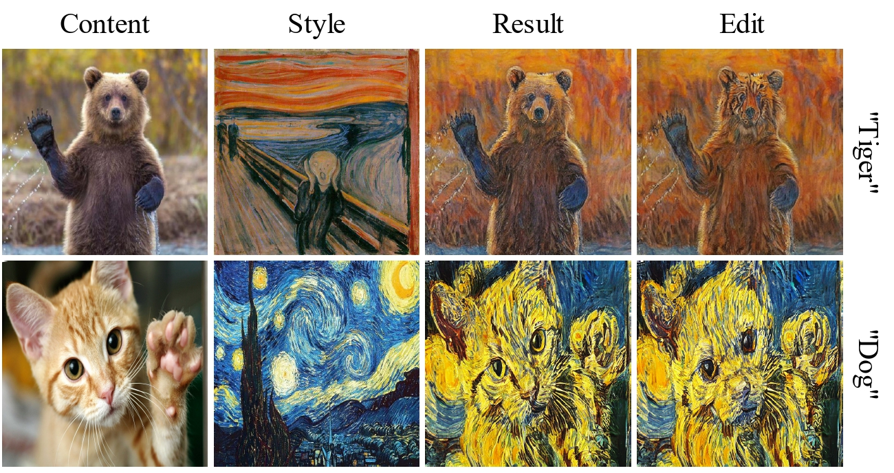
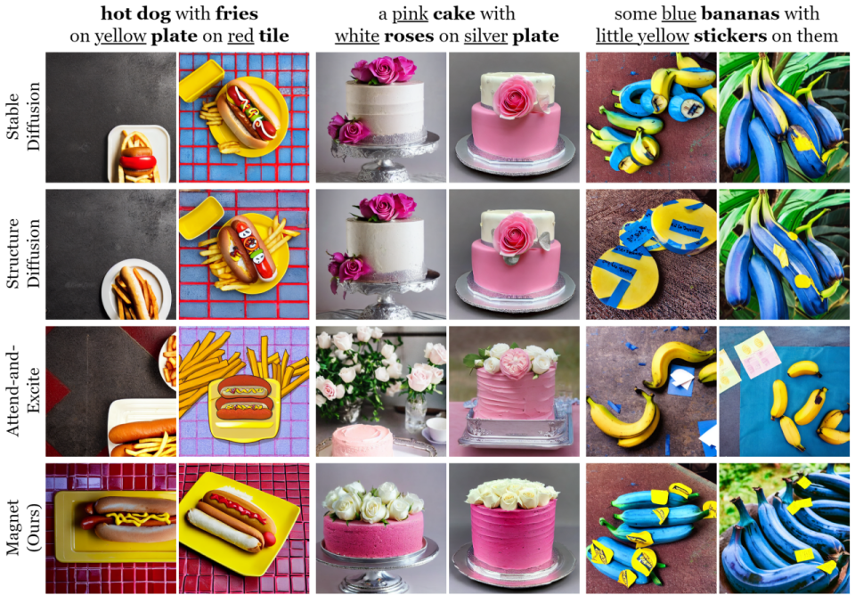
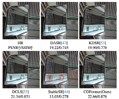
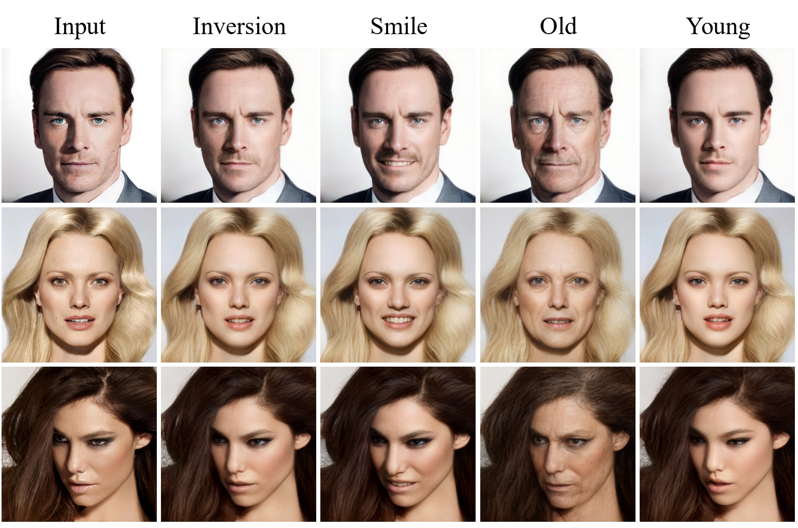

|
Chenyi Zhuang I'm currently a master's graduate student in Computer Technology at the Nanjing University of Aeronautics and Astronautics (2022-2025), supervised by Prof. Pan Gao at the Immersive and Interactive Multimedia Lab (I2ML). I am applying for a PhD program in the fall of 2025. If you are interested in me, feel free to contact me by e-mail. |

|
ResearchI'm interested in computer vision, especially generative models, and explainable AI. My current research primarily focuses on image-related (multi-modal) tasks, but I am also interested in computer graphics and video understanding. * indicate an equal contribution. |
|  |
DiffuseST: Unleashing the Capability of the Diffusion Model for Style Transfer
Ying Hu*, Chenyi Zhuang*, Pan Gao. ACM MM Asia, 2024 code / arXiv Leverage textual and spatial representations and the step-by-step denoising nature of the pre-trained diffusion model to achieve balanced style transfer results. |
|  |
Magnet: We Never Know How Text-to-Image Diffusion Models Work, Until We Learn How Vision-Language Models Function
Chenyi Zhuang, Ying Hu, Pan Gao. NeurIPS, 2024 code / arXiv In-depth analysis of attribute understanding for CLIP text encoder and CLIP-based diffusion models, a novel training-free approach to tackle the attribute binding issue. |
|  |
CDFormer: When Degradation Prediction Embraces Diffusion Model for Blind Image Super-Resolution
Qingguo Liu, Chenyi Zhuang, Pan Gao, Jie Qin. CVPR, 2024 code / arXiv Investigate the diffusion model as an estimator to predict Content Degradation Prior (CDP) with rich content detail for the super-resolution task. |
|  |
StylePrompter: All Styles Need Is Attention
Chenyi Zhuang, Pan Gao, Aljosa Smolic. ACM MM, 2023 code / arXiv Propose a Transformer-based framework to predict W+ codes at the token level for StyleGAN, with a Style-driven Multi-scale Adaptive Refinement Transformer (SMART) block to refine features in F space. |
What's More?My academic career is guided by two principles: "A believing heart is magic" which enables my commitment to any prospective work and project, and "simple but effective" which reflects my high productivity and creativity. |